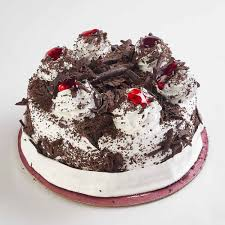

For mine I used my own gluten free flour blend and as it was 110°F that day and I was going to be delivering cupcakes I stabilized the whipped cream with agar powder rather than milk powder. For the cupcakes I injected the filling.Amazigly light and fluffy while still rich and chocolaty with not too much sweetness. This is by and far my favorite black forest cake recipie. As a German woman, it breaks my heart to see all of these black forest cakes in North America made with sickeningly sweet icing and gross cherry pie filling.This cake isnt meant to be very sweet but is rather a dessert for adults with deep rich flavours and enough alcohol to make your head spin! If you cannot get fresh.As far as I know, this cake recipe can be traced back to my German great-grandma. When I got married, my mother gave me a copy and I hope to someday pass it down to my children. —Stephanie Travis, Fallon, Nevada.Under all the whipped cream icing of the Black Forest cake are three layers of chocolate génoise soaked in kirsch. My father finished his génoise by hand, using a huge whisk with widely spaced wires to fold the flour and then the butter into the batter with big, efficient strokes so it would not deflate. On a daily basis, he would.
